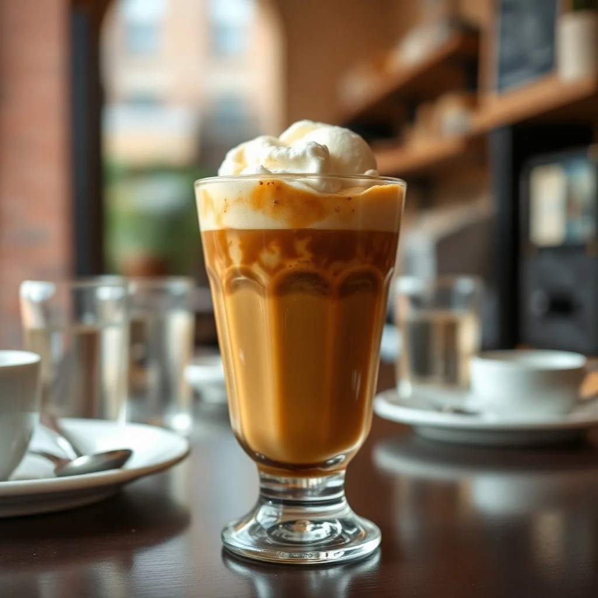
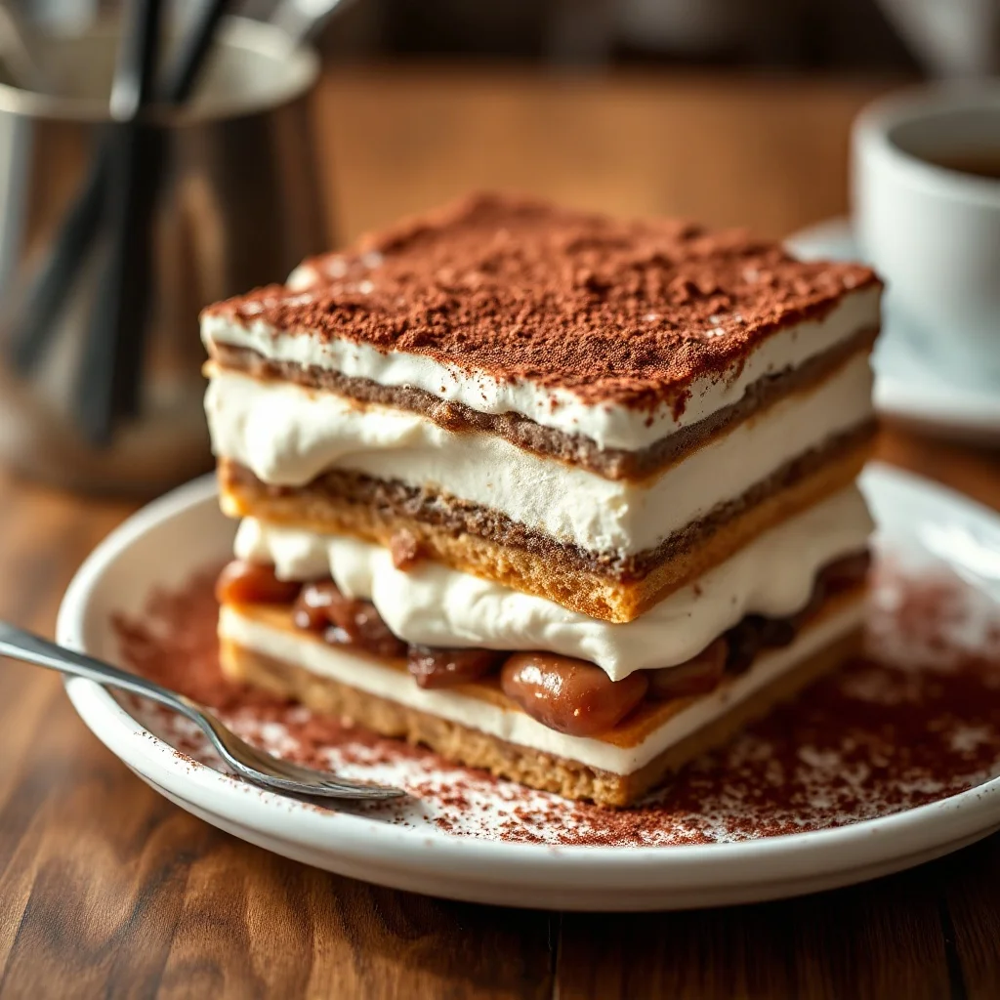
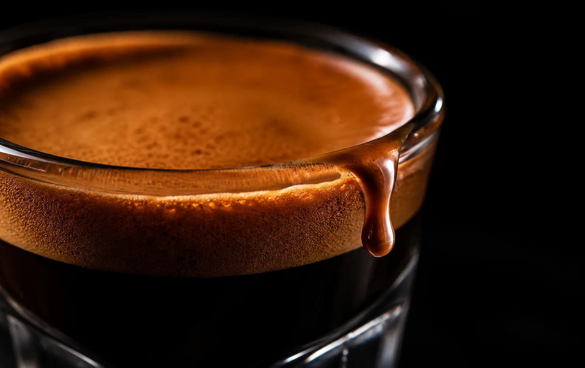

Tapa de sección
La Carta
Bar de pie, algo para acompañar y granos para llevar a casa. Todos los cafés están disponibles para llevar.
Bar & Espresso

Recomendado
Affogato al caffè
$7.400
Espresso caliente servido directo sobre gelato de vainilla — el contraste se deshace en la cuchara antes de llegar a la boca.
Pedir ahora- Espresso$4.200
- Espresso doppio$5.400
- Macchiato$4.600
- Cortado$4.800
- Cappuccino$5.600
- Flat white$6.200
- Marocchino$6.800
- Mocaccino$6.900
- Miscela Vesuvio$5.400
- Shakerato (con hielo, temporada de verano)$6.800
- Decaffeinato all'Antica$5.800
- Ristretto Riserva (micro-lote, edición limitada)$8.200
Para acompañar

Recomendado
Tiramisù de la casa
$7.200
Capas de mascarpone, café recién colado y cacao amargo. La receta no cambió desde 1962, y no pensamos cambiarla.
Pedir ahora- Cornetto vacío$3.600
- Cornetto con crema pastelera$4.400
- Cornetto con chocolate$4.400
- Torta della nonna$6.800
- Focaccia del día$5.200
- Panino (jamón crudo y provolone)$8.400
Granos para llevar

Recomendado
Ristretto Riserva — 250g (micro-lote)
$9.800
El micro-lote que más rápido se agota. Llevate una bolsa antes de que se termine la cosecha.
Pedir ahora- Decaffeinato all'Antica — 250g$7.200
- Decaffeinato all'Antica — 500g$13.400
Molienda a pedido: espresso, filtro o prensa francesa, sin cargo.
Todos los cafés están disponibles para llevar.
Precios sujetos a cambios — última actualización: temporada otoño 2026.